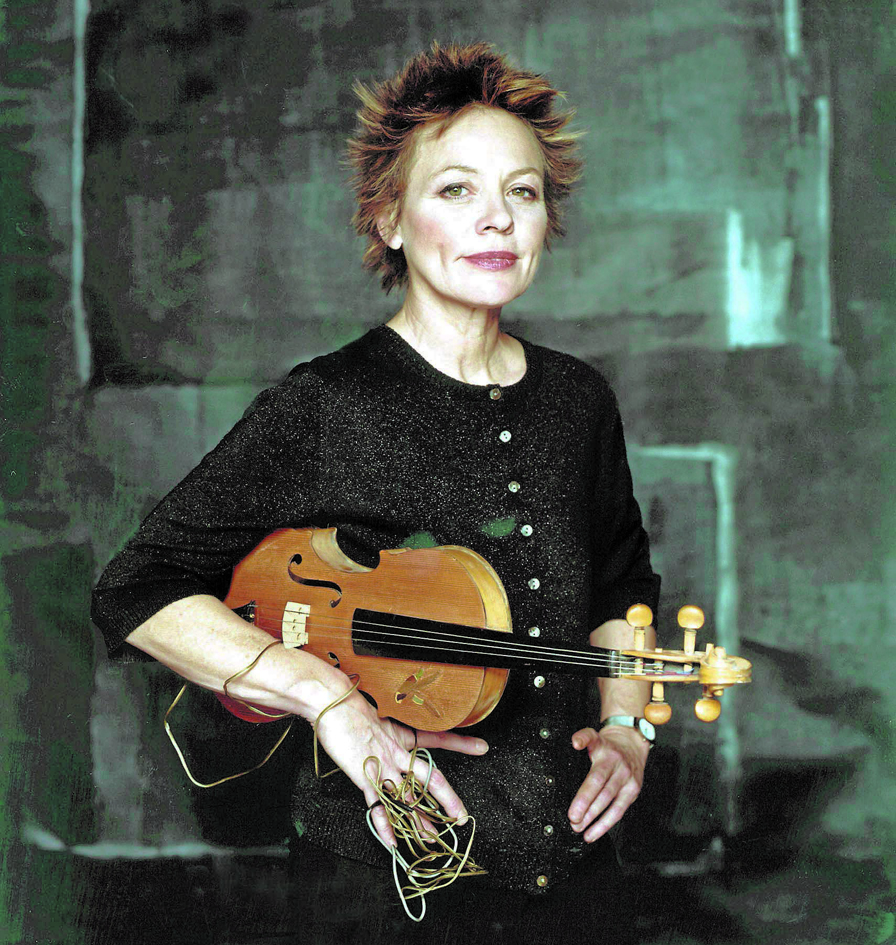

Performance, tecnología y narración en el arte contemporáneo
"El lenguaje es un virus que viene del espacio exterior."
— Laurie Anderson
FOTO LAURIE ANDERSON
VIDA Y OBRA
Laura Phillips " Laurie " Anderson (nacida el 5 de junio de 1947) es una artista vanguardista estadounidense, música y cineasta cuyo trabajo abarca el arte performático, la música pop y proyectos multimedia. Inicialmente formada en violín y escultura, Anderson llevó a cabo una variedad de proyectos de arte performático en la ciudad de Nueva York durante la década de 1970, centrándose particularmente en el lenguaje, la tecnología y las imágenes visuales. Logró un éxito comercial inesperado cuando su canción " O Superman " llegó al número dos en la lista de sencillos del Reino Unido en 1981. El álbum debut de estudio de Anderson, Big Science, se lanzó en 1982 y desde entonces ha sido seguido por varios álbumes de estudio y en vivo. Protagonizó y dirigió la película de concierto de 1986, Home of the Brave. La producción creativa de Anderson también ha incluido obras teatrales y documentales, actuación de voz, instalaciones artísticas y un CD-ROM . Es una pionera en la música electrónica y ha inventado varios dispositivos musicales que ha utilizado en sus grabaciones y espectáculos de performance.

FOTO LAURIE ANDERSON CON INSTRUMENTOS
PRIMEROS AÑOS Y EDUCACIÓN
Laura Phillips Anderson nació en Chicago el 5 de junio de 1947 y creció en el suburbio cercano de Glen Ellyn, Illinois , siendo una de los ocho hijos de Mary Louise (de soltera Rowland) y Arthur T. Anderson. Durante su juventud, pasaba los fines de semana estudiando pintura en el Instituto de Arte de Chicago y tocaba con la Orquesta Sinfónica Juvenil de Chicago . Se graduó en la escuela secundaria Glenbard West. Asistió a Mills College en California y, después de mudarse a Nueva York en 1966, se graduó en 1969 de Barnard College con una licenciatura magna cum laude y Phi Beta Kappa , estudiando historia del arte . En 1972, obtuvo una maestría en bellas artes en escultura de la Universidad de Columbia. Su primera performance —una sinfonía interpretada con bocinas de automóviles— se presentó en 1969. En 1970 dibujó el cómic underground Baloney Moccasins , publicado por George DiCaprio . A principios de la década de 1970 trabajó como instructora de arte y crítica de arte para revistas como Artforum, e ilustró libros infantiles , el primero de los cuales se tituló The Package (1971), una historia de misterio contada únicamente con imágenes.
 FOTO LAURIE ANDERSON
FOTO LAURIE ANDERSON